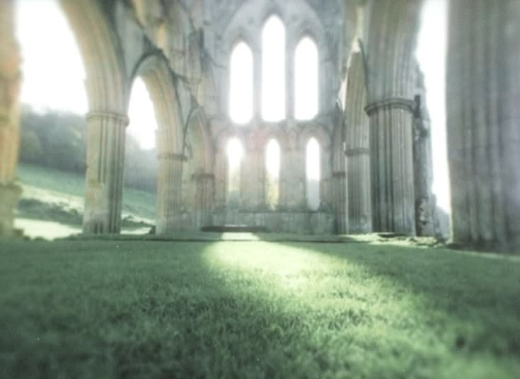
品牌、用户与文化洞察
Brand · Consumer & Cultural Insight
从品牌叙事、用户洞察与文化研究出发，覆盖内容体系、活动统筹与传播交付的全链路。
Brand narratives, consumer insight, cultural research, content systems, and campaign delivery from insight to execution.
进入方向
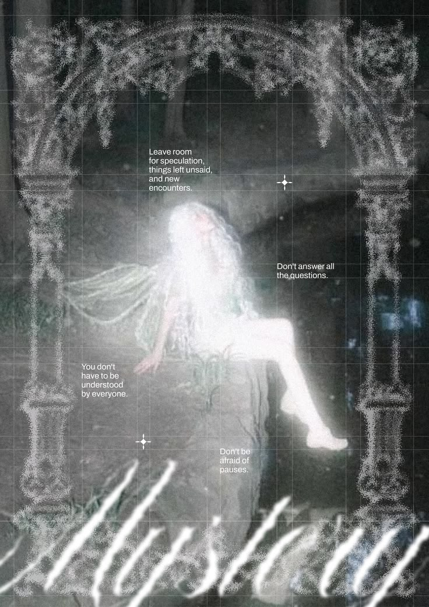

从品牌叙事、用户洞察与文化研究出发，覆盖内容体系、活动统筹与传播交付的全链路。
Brand narratives, consumer insight, cultural research, content systems, and campaign delivery from insight to execution.
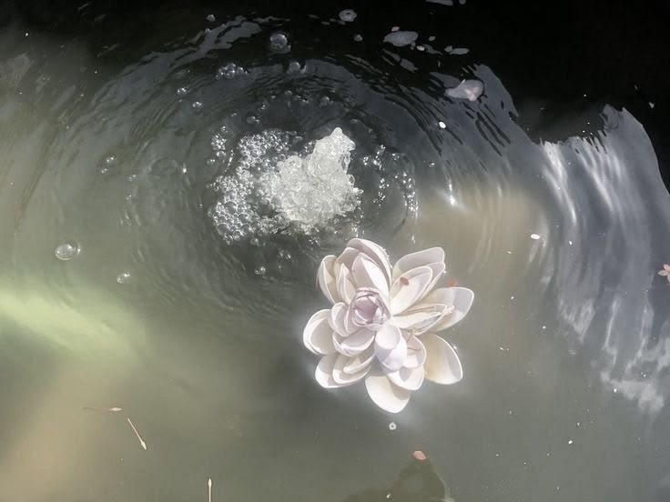
以评测系统、人机协同、智能产品与用户研究为核心，让 AI 的能力被审美判断与清晰方法论共同约束。
AI evaluation, human–AI research, intelligent products, and user research grounded in human aesthetic judgment.
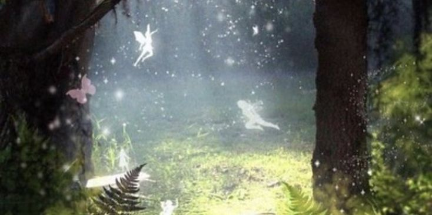
诗歌、小说、文艺评论、音乐与影像等原创内容，加上 AI 视觉、AI 音频与 AI 代码（Vibe Coding）的探索实验。
Original poetry, fiction, criticism, music, and moving image, alongside AI visuals, AI audio, and AI-assisted code (vibe coding).
Brand · Consumer & Cultural Insight
从品牌叙事、用户洞察与文化研究出发，展示内容体系、活动统筹与传播交付的全链路能力。
Brand narratives, consumer insight, cultural research, content systems, and campaign delivery from insight to execution.
AI-Native · Innovation & Workflows
以评测系统、人机协同、智能产品与用户研究为核心，让 AI 的能力被审美判断与清晰方法论共同约束。
AI evaluation, human–AI research, intelligent products, and user research grounded in human aesthetic judgment.
Content · Creative · AIGC
诗歌、小说、文艺评论、音乐与影像等原创内容，加上 AI 视觉、AI 音频与 AI 代码（Vibe Coding）的探索实验；从人类叙事到机器共创。
Original poetry, fiction, criticism, music, and moving image, alongside AI visuals, AI audio, and AI-assisted code (vibe coding); from human narrative to co-creation with machines.
从两个叙事的心理世界，到音乐与影像的呼吸感；再到诗与灵光的私人写作档案，
以及用理论照亮电影文本的研究。每一个入口，都是创作的一个侧面。
From two psychological story worlds, to a breathing practice of sound & image, to a private archive of poetry and luminous writing, to theory meeting film text — each door opens a different facet of one imagination.
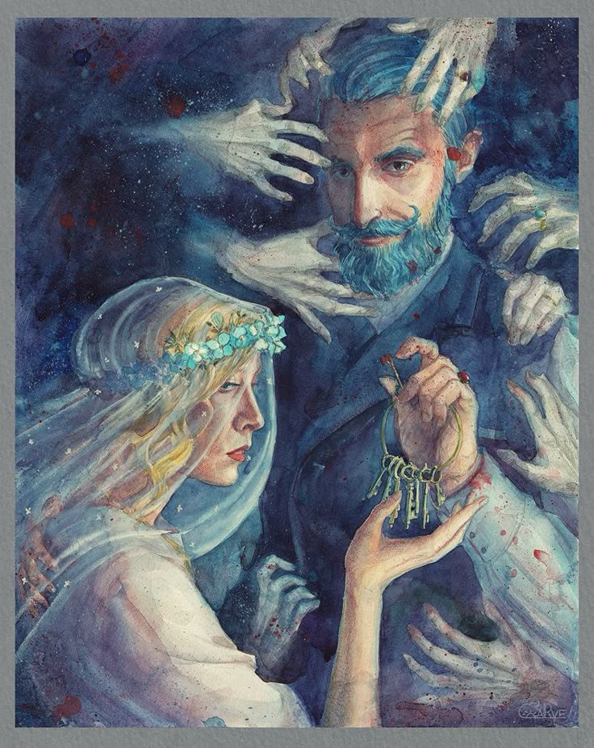
从意识流、记忆与象征构成的心理空间，到悬念、规则与人物关系驱动的类型世界。
From a psychological space shaped by stream-of-consciousness, memory, and symbol — to a genre world driven by suspense, rules, and relationship.
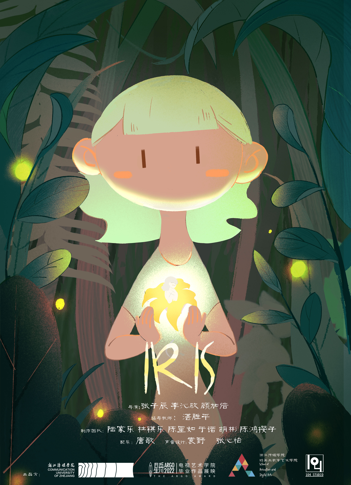
原创配乐、声音设计、音乐叙事与剪辑——让声音参与交互、运动与叙事本身。
Original scores, sound design, musical narrative, and editing — sound as a participant, not an attachment.
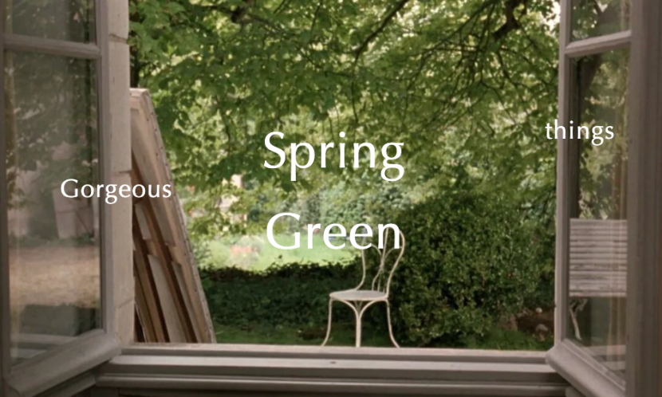
独立运营个人公众号，发布诗歌、评论与散文；把日常生活经验转化为意象与节奏训练。
I independently run a WeChat column of poems, criticism, and essays — turning lived experience into imagery, rhythm, and critical discipline.
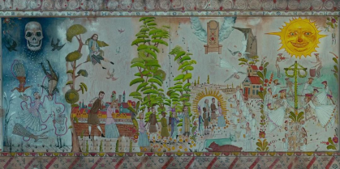
从文化人类学的深描方法到当代爱欲与情感理论，以电影文本为对象，让理论进入具体感知经验。
From thick description in cultural anthropology to contemporary theories of desire and affect — applying them to film as close reading.
从失眠的冬夜一路写到早晨的报纸与新书分享会，
时间不靠钟表走，靠恐惧与发现推动——
直到地下室玻璃前"我已经在这里死去的"。
父亲讲过的克利福德塔鬼故事、
老婆婆熏着乌木檀香的古董玩具店——
童年记忆成为真相的预演。
蓝色鸢尾花 = 妻子艾瑞斯的名字与囚禁的暗号；
玻璃笼子 = 困住与倒影；
鹅黄灯光 = 看似温暖的残忍。
跟踪的孤独 → 发现真相的恐惧 →
面对凶手的宽恕与复仇之间。
"蓝鸢尾很漂亮"——一句话让刀落地。
报纸上，我看到了那个男人的照片，还有他创作的悬疑小说《血色蓝鸢尾》刚一上市便被一抢而光。讲的是一个深情的男人，在婚后由于看到妻子十分受欢迎，开始妄想妻子的出轨，而自己的幻想由于太过真实而让他时常产生幻觉与痛苦，他逐渐将幻想当成现实，然后将妻子锁在地下室的笼子里，用黑暗与绝望谋杀了他深爱的女人——原来他真的是个小说家。他叫里德尔，如此受欢迎，不仅仅是因为他的作品引人入胜，他还将自己的钱常常拿来做慈善，捐给学校和医院。
转角的书店那天刚好邀请他去做新书分享会，我慕名而去，听到他说他的灵感来源于妻子的离世，说到动情处他哽咽了一会，将揣在上衣兜里的手巾抽出来抹掉了眼泪，下面的人也跟着唏嘘起来。我因为他的悲伤而悲伤，便留到最后，邀请他一起共进晚餐。
· · ·
里德尔收拾好自己的牛皮包后抬起眼来看到我，眼神里流露出惊讶甚至带一丝暧昧的怜惜，艾瑞斯？
我愣了两秒后，他突然恢复方才分享时的正常神情，不好意思，女士，是我刚才脑袋糊涂了。请问有什么可以帮到你的？
我说，我想吃约克布丁与烤牛肉，他或许也需要这样的一份甜食与烤牛肉的香气治愈一番。
我们一见如故。我告诉他我是佩内洛普古董玩具店的店长，就在离他不远的地方，他说他也偶尔会去那里逛一番，现在家里还留着一些古铜钟表和天使的小物件，却似乎并没有见到过我，每次都是直接把钱放在店门口的篮子里，附上一张纸条自己拿走了什么。
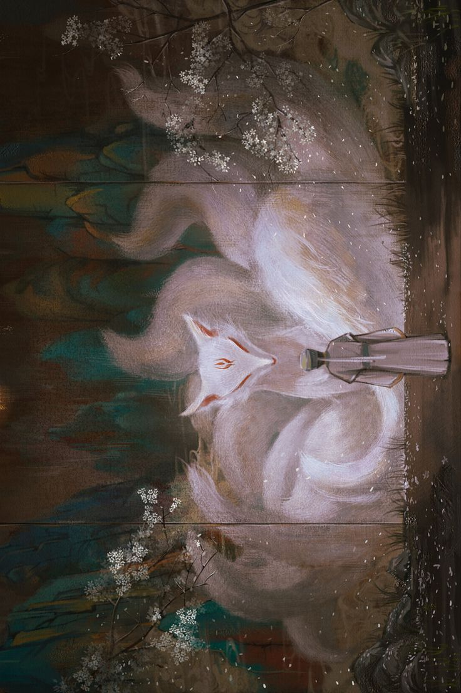
客栈立於灵泊之界，内院怪异地坐落三人，各处光景色彩互不相通——像用多块旧布缝补的沙包
客人以执念进入，付阳气做盘缠；每一次回去救人，失败便加重阳气流失，直到化作孤魂
宇卫卿（执念者）· 涂山莲（狐妖·客栈主人）·琼笙（被献祭者）·德公子（由爱生恨者）
涂山莲自己曾为情执念——客栈与九尾是她自己的轮回牢笼；客栈甜酒被人动了手脚
北村以"辟邪"为由每年血祭抽签；德公子因爱生恨；宇卫卿的每一次拯救都被更大的命运反噬
银月渐渐不如先前盈圆了，冷而稀薄地孤坠着，消瘦着。风厉泣，来自冥地。
这荒冢郊岭中，只有那几点灯火游移浮动。就在不远处，似在水下飘映的海市蜃楼，红莲花瓣绽开一般的灯笼，魅兮兮地招摇。宇卫卿从未见过这客栈，也从未知晓北村有这样的地方——他觉得，这大概就是地府的入口了。
— — —
这客栈便赫然立在眼前了——绛莲客栈，阁琉榭丽，盏萤莲魑。宇卫卿还未敲，门便沉沉地向内打开。这院内的布局十分怪异，内院里只零散地坐了三两人，而每个人所在的区域都有着不同的光景色彩，仿佛不在一个时空中，如一个用多块旧布缝补的沙包。
一个头上有个窟窿的小孩，洞里汩汩地冒着血，这血也不知流向哪里，又不知何时流尽，只是不住地流。他专注地够着墙角一个巨大的柜子上的糖人儿，那椅子摞起来又摇摇欲坠，每次都跌下来，然后一头撞在突出的桌角上。
另一个坐在书院里的考生，疯狂地在桌上写着那张试卷，他哭腔带着，嘴里喃喃着，双眼流出的血成了他笔下的墨，以血书写他"光明的未来"。
还有一女子，一袭红装，不停地扑着粉扑，鬓角处隐隐透着淤青。倏地，她停下手中的动作来，将华服缓缓脱下、站起身来……
声音、节奏、影像与交互如何共同讲故事。
How sound, rhythm, image & interaction tell a story together.
✦
声音不是作品附件，而是页面中真正参与
交互、运动与叙事的媒介。
Sound is not an attachment to a work — it is the medium that
participates in interaction, motion, and narrative.
一个女孩寻找蝴蝶，最终发现自己就是蝴蝶。
A child searches for a butterfly, only to discover that she has been the butterfly all along.
原创管弦配乐成为主要叙事声音；音效填充经过设计的音乐留白。
Original orchestral scoring becomes the main narrative voice, while sound effects fill deliberate musical absences.
主题动机以变奏形式回归——通过配器、调性与能量变化，让重复成为转化。
The main motif returns in altered orchestration and harmony, turning musical repetition into narrative transformation.
没有画面，声音本身能否讲一个完整故事？
Can sound tell a story without images?
白天正常营业的玩具店；深夜有人进入；电话响起，一声枪响；八音盒逐渐损坏，一支舞曲继续响着。
A toy shop open by day. At night, someone enters. The phone rings. A gunshot. Toys move. A music box slowly breaks — yet a waltz keeps playing.
大管 · 大号 · 钢片琴 · 竖琴 ·
大提琴拨弦 · 八音盒 · 大键琴 ·
小提琴 · 钟琴
Bassoon · Tuba · Celesta · Harp ·
Cello pizzicato · Music box · Harpsichord ·
Violin · Glockenspiel
通过节奏、记忆与情绪的层层叠加，剪辑重新组织一个我们早已熟悉的角色。
Editing reorganizes a familiar character through rhythm, memory and emotional accumulation.
一件实体文物。编钟、磬、青铜乐器。
A physical cultural relic — bronze bells, chimes.
H5 数字藏品：让用户在线点亮、点击、收听，声音从线性音乐进入交互媒介。
An H5 digital artifact: light, click, listen — sound moves from a linear track into a digital interaction.
STORIES DO NOT BEGIN WITH WORDS.
SOMETIMES THEY BEGIN WITH A SOUND.
故事不一定从文字开始。
有时，它从一个声音开始。
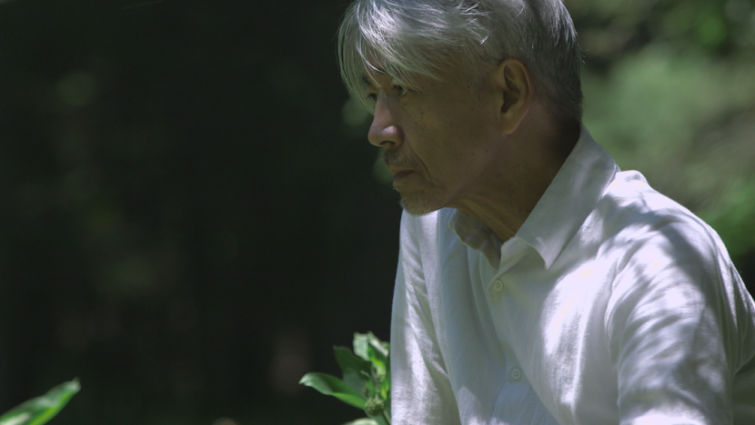
抚摸一架浸泡在深海的老钢琴，
太平洋大陆架里融进的混响，
幽灵滑过肌肤的触感。
将自然界的声音作为探寻，
冰川下汲世纪水流，
森林里做生命交响，
在彼得·勃鲁盖尔的雪地上，
诗意飘向塔可夫斯基。
限制即自由，
因打破局限，
在每一个瞬息获得新生。
专注感受声之美，
孩提状态的探索，
便是"无我"之境。
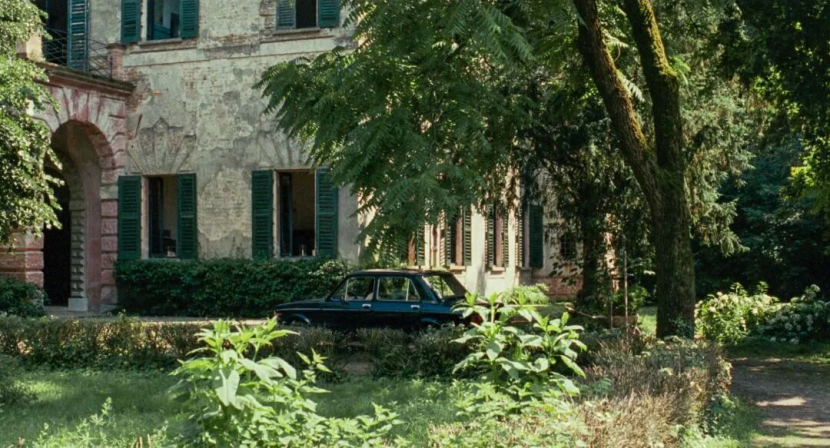
意大利北部乡间的别墅，
冗长的夏日在阅读、音乐、游泳中。
水波平静时，
以一石击，
千层浪或不惊归静。
闯入者知身处旅程，
便携享受之心与不曾久长的热忱。
被人闯入花园的园主，
在拥抱过大洋彼岸的鸢尾花后，
便一生记得，
可花园里再种不出。
夏日之恋是青梅子酒后短暂的微醺，
是桃子熟了一同栽进树荫下的泳池。
花园的地苔退去，
年少的心事，
以悠长姿态远去，
以梦长为由永留。
闲林山水的桅杆上晾着银海棠，
牛角包与墙边流淌的兰玲花，
引我穿过蓊郁尚高的深林，
灯草虫鸣闪光，
簇簇月桂焚烧后诱发幻象。
身体渗入半幅《大地之绿》，
龙骨衔接着青提，
植入时光日记的圣水瓶里，
中世纪魔法藏纳于豆蔻火烛，
一句话吹散秋叶的锋利络绎。
降落在大地上，
所有的潮湿、涌动、包裹、寒暖交加，
浓绿之溪汇成一种奇迹，
拥入每一场繁复而泞泽的梦里。
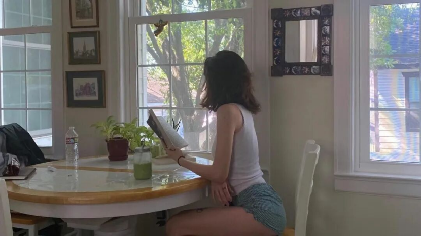
银色柔波的存在，
一种环绕在周身的不可名状，
在晴朗或余晖下才见淡淡萤萤的光。
乍现时，是生活家、美学家、艺术家，
这以前，是感受者、学习者、观察者。
物质世界被建构，
思想与行为被塑造，
流淌的自由意识堵在地球之外。
在有用之用后逃离躯壳，
在无用之事中重塑灵魂。
双重身份的双子，
一个追求终极意义，
一个在做中自创意义。
灵光是不被捆绑的双眼双耳，
是一片纯净的精神自留地，
是物质之上却无法单独存在的一种流淌意识。
从文化人类学的深描方法到当代爱欲与情感理论，
以电影文本为对象，整理理论如何进入具体感知经验的两组研究。
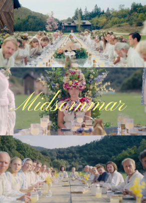
选择人类学中的深描而不是普通主题分析，是为了说明仪式不是猎奇元素，而是完整意义系统的表达。
Thick description turns the film's rituals from spectacle into a legible system of meaning.
分析没有把电影当作理论注脚，而是用理论照亮文本自身的社会想象。
Theory illuminates the film's social imagination rather than reducing it to an example.
信息爆炸、功能化与透明化正在侵蚀想象力和真正的相遇；电影中的注视、缺席与火焰成为理论的情感化表达。
Hyper-information and transparency erode imagination and genuine encounter; cinema gives theory an emotional body.
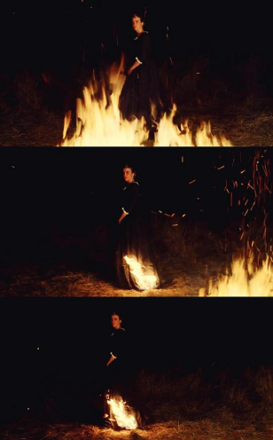
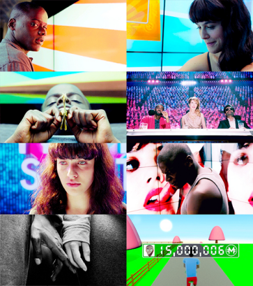
研究结论指向一种可行的内容价值：重新承担"他者"的责任，而不是只提供情绪速食。
The research argues for content that restores responsibility toward the other instead of offering emotional fast food.
北京师范大学艺术管理方向硕士，兼具用户洞察、品牌叙事与跨媒介内容生产能力。
曾参与文旅传播、AI 教育品牌营销及大型文化活动交付，并通过 Vibe Coding 上线个人作品集网站、开发融合本人 AI 生成音乐的互动游戏 MVP，擅长将创意转化为可传播、可体验的线上作品。
长期写作训练与影像深读，能从一段文字或一个镜头里拆出风格、情感与意图。
把"难以表达的感受"翻译成具体的视觉、声音与文本结构；让抽象的灵感成为可被感知的体验。
踏实、负责、能兜底；交付物不止于"做完"，更接近"对方能放心地用"。
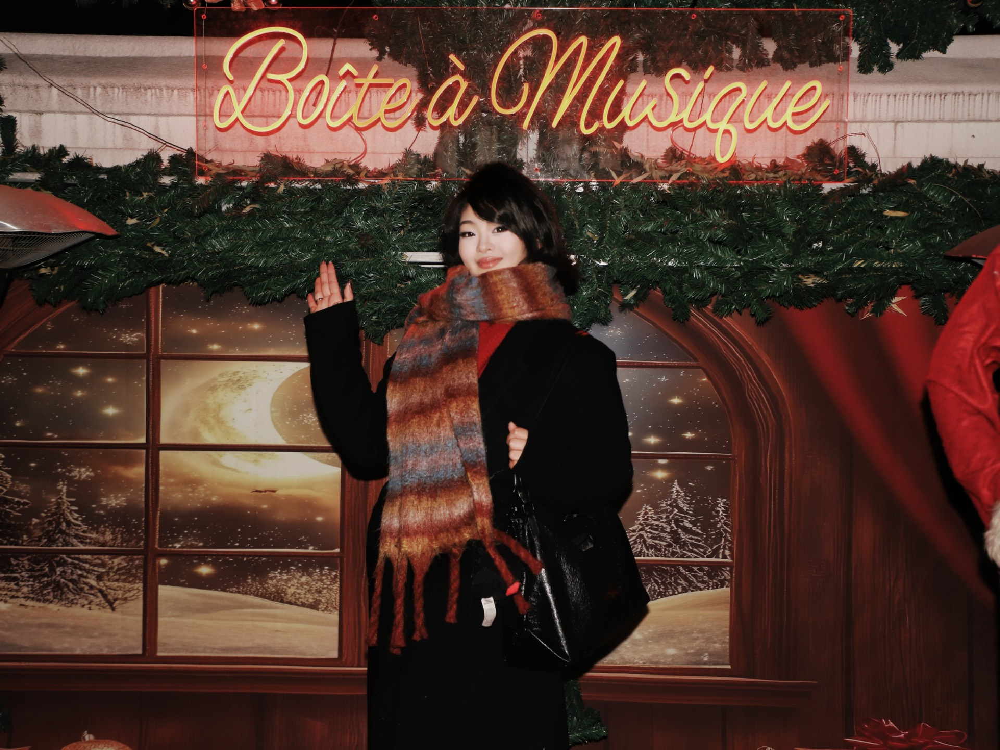
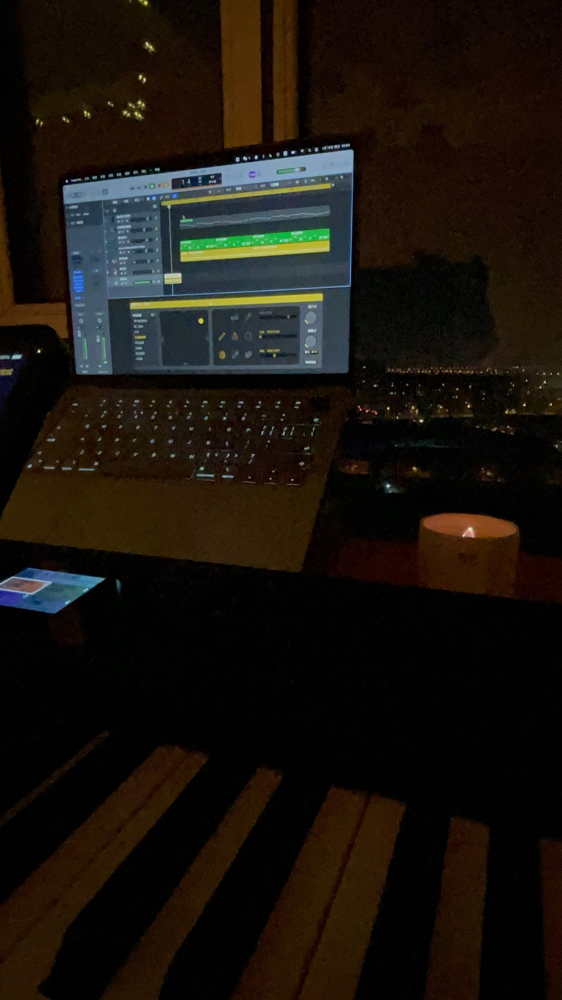
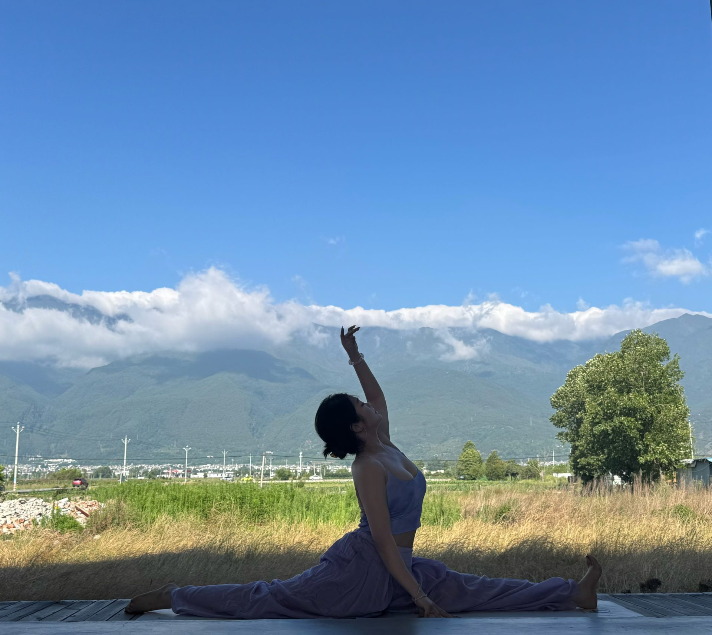
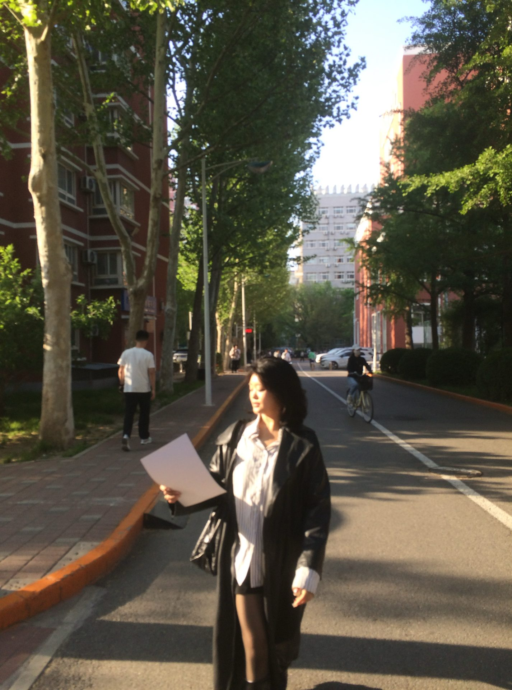
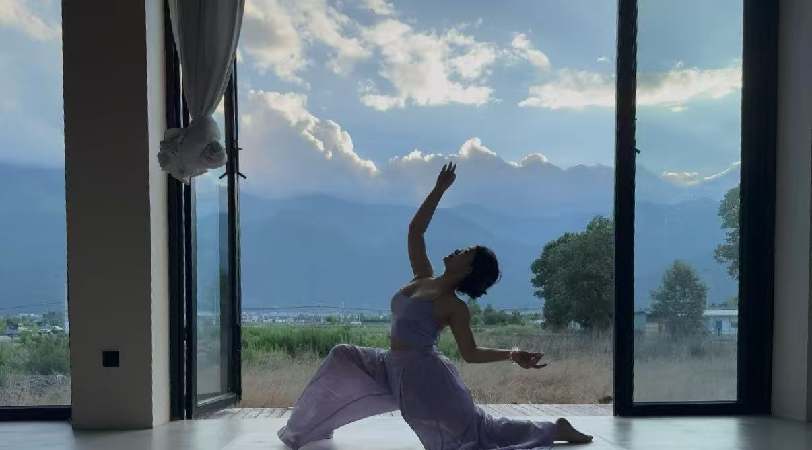
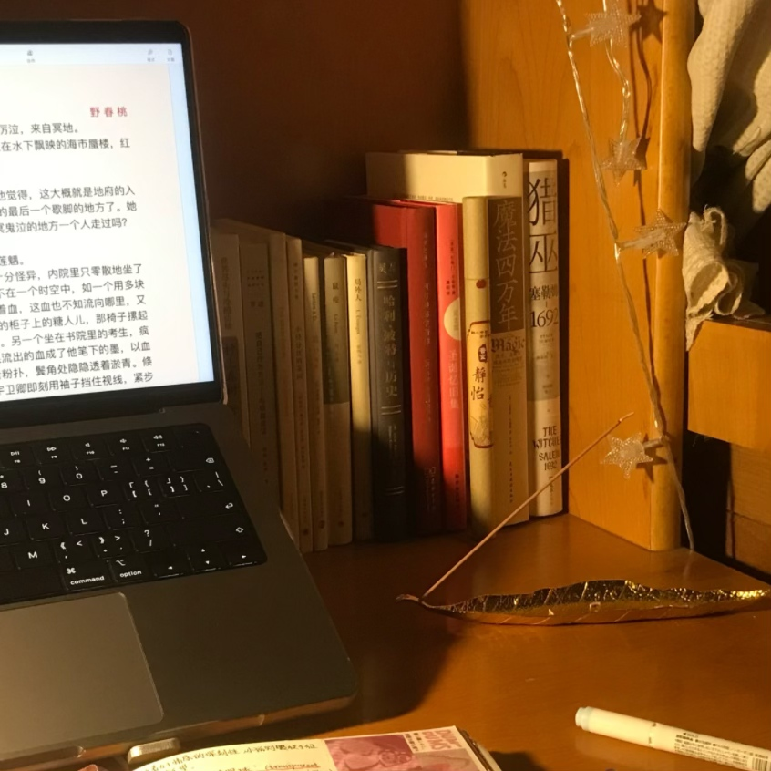
欢迎把岗位、团队或作品集问题发给我。